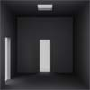

Las torres de Hanoi 4
Descripción|  | Para el problema de representación de las torres de Hanoi 3, se plantea lo siguiente: Nos encontramos con una torre de cuatro piezas de distinto tamaño. |
Tenemos tres lugares en la mesa donde podemos colocar la torre, en un primer lugar la torre se encuentra en el lado izquierdo en orden decreciente, al final se tiene que encontrar en orden decreciente pero en el lado derecho.
RepresentaciónA partir de este enunciado hemos tomado como estado sobre dónde se encuentran cada una de las fichas en cada momento.
- Estado inicial: (B,C,D,1), En un primer momento la pieza A(pequeúa) está sobre la B(mediana), la B sobre la C(grande)y esta sobre la D(más grande) todas ellas en el lado izquierdo de la mesa.
- Estado objetivo: (B,C,D,3), La misma colocación que en el estado inicial pero ahora sobre el lado derecho de la mesa.
A partir del estado inicial se crea el espacio de estados, aplicando una serie de operadores que hemos definido, basándonos en el enunciado:
- MA_1 "Mover A en 1"
- MB_1 "Mover B en 1"
- MC_1 "Mover C en 1"
- MD_1 "Mover D en 1"
- MA_2 "Mover A en 2"
- MB_2 "Mover B en 2"
- MC_2 "Mover C en 2"
- MD_2 "Mover D en 2"
- MA_3 "Mover A en 3"
- MB_3 "Mover B en 3"
- MC_3 "Mover C en 3"
- MD_3 "Mover D en 3"
Cada uno de estos operadores se podrá aplicar a un estado siempre y cuando éste cumpla su precondición:
- Ejemplo: MA_1, sólo se puede aplicar si A se encuentra en 2 ó 3.
Para las estrategias no informadas que hemos incluido, no llegamos a la solución, hemos tenido que implementar 3 heurísticas basadas todas ellas en las distancia de Manhattan, pero en las que varía la función de evaluación de la misma. Pasamos a exponer sus resultados a continuación:
- HeurísticaPrimera
- Tiempo de ejecución: Aprox. 6600 ms.
- Número de nodos expandidos: 39663
- Solución: En 15 pasos(MA_2,MB_3,MA_3,MC_2,MA_1,MB_2,MA_2,MD_3,MA_3, MB_1,MA_1,MC_,MA_2,MB_3,MA_3)
- HeurísticaSegunda
- Tiempo de ejecución: Aprox. 20 ms.
- Número de nodos expandidos: 248
- Solución: En 15 pasos(MA_2,MB_3,MA_3,MC_2,MA_1,MB_2,MA_2,MD_3,MA_3, MB_1,MA_1,MC_,MA_2,MB_3,MA_3)
- HeurísticaTercera
- Tiempo de ejecución: Aprox. 4967 ms.
- Número de nodos expandidos: 67509
- Solución: En 15 pasos(MA_2,MB_3,MA_3,MC_2,MA_1,MB_2,MA_2,MD_3,MA_3, MB_1,MA_1,MC_,MA_2,MB_3,MA_3)
La HeurísticaSegunda es infinitamente mejor que las otras 2, no sólo por el tiempo que tarda en resolver, sino sobre todo por la cantidad de nodos expandidos, ya que expande más de 100 veces menos, los nodos de las otras dos.